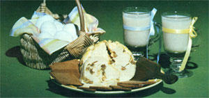
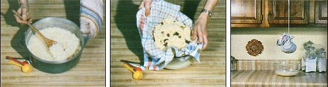

For a delicious, traditional Easter dish that's also great for snacking, treat yourself to . . .
Each year, we follow the custom of our Hungarian ancestors by preparing sweet cheese for Easter. This traditional, easy-tomake comestible (which requires no unusual ingredients) is served with boiled ham, kielbasa (a delicious smoked sausage), fresh Easter bread, boiled eggs, and horseradish. It can also be enjoyed - with wheat crackers - as an appetizing hors d'oeuvre or a wholesome snack.
To make sweet cheese, you will need 1-1/2 quarts of milk, 1 dozen eggs, 4 tablespoons of honey, 1/2 to 1 teaspoon of salt, and a yard of cheesecloth (or a large, porous dish towel). We sometimes add a handful of golden raisins and/or dried currants, but such "surprises" are optional.
The first step is to beat the eggs, honey, and salt together until they're well blended. When that's done, heat up the milk in a large pan, stirring constantly, and - when it comes to a boil - add the egg/honey/salt mixture and continue to boil and stir for 8 to 10 minutes, or until the mixture curdles (it'll resemble yellow cottage cheese). At that point, remove the pan from the heat and mix in dried fruits if desired.
Next, fold the cheesecloth in half and then in half again, to make a four-layered square of material. Place the cloth in a colander and put the colander in a large bowl or pan.
Pour the curdled milk into the lined strainer, and then pull the corners of the cheesecloth together, twisting tightly and squeezing out as much liquid as you can while forming the curds into a ball. Tie the "bag" shut with a piece of string or a clean shoelace, and hang it (above a bowl) overnight ... allowing the remaining liquid to drain off and leave a nice, firm cheese globe. (You can chill the leftover liquid and serve it as a rich eggnoglike - but thin - drink.)
When you unwrap the cheese the following morning, store it in the refrigerator in an airtight container to keep the sphere fresh and moist till you're ready to eat it.
You may not be of Hungarian descent, but we bet that once you try this Easter dish, sweet cheese will become a tradition in your household, too.
EDITOR'S NOTE: MOM's recipe testers found the cheese to be easy to make and tasty. They also recommend experimenting with the basic formula ... perhaps adding other types of dried fruit, nuts, and so forth.
|
 To make a sweet ball of flavor, cook the mixture till it resembles yellow cottage cheese . . . wrap in porous cloth . . . and drain overnight. |
 |
|